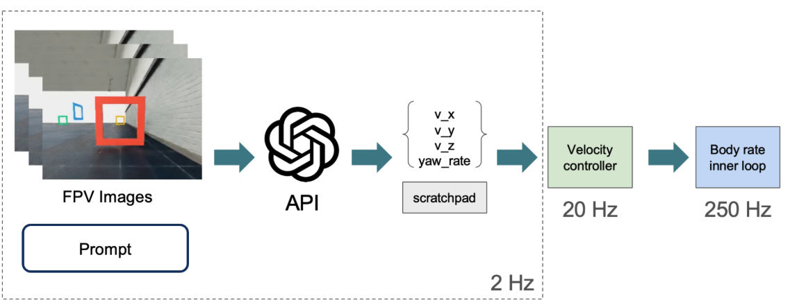
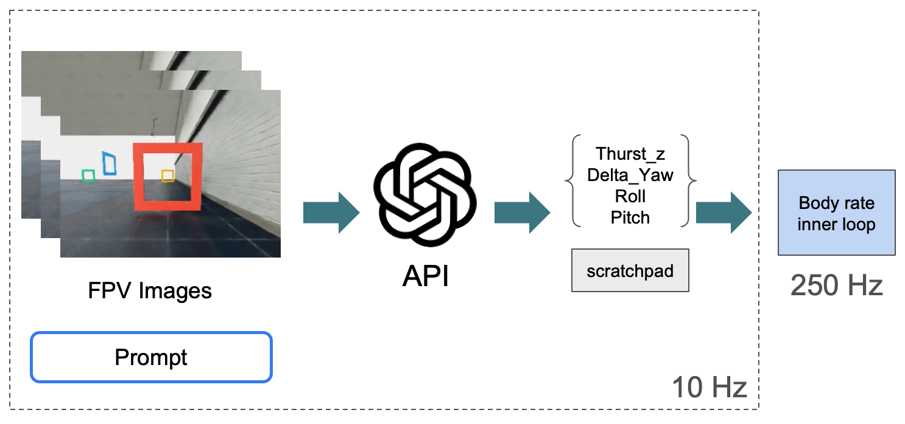

GPT-Astra as a Drone Pilot
By Vineet Pasumarti and Antonio Loquercio
We have all seen GPT-Astra's impressive capabilities in the last few weeks: controlling a real car, doing some basic pick-and-place, and performing other manipulation tasks that require some level of spatial understanding. Since our group mostly works on aerial robotics, we decided to ask the following question: Can GPT-Astra directly control a drone solely from a first-person view image (akin to human pilots)?
The short answer to this question is NO. With a 5-6s round-trip latency to receive a command, the drone can only fly at very low speeds. For example, if you fly at a constant 1 m/s (the average human walking speed), a 5s latency means the drone will be blind for 5 m. A crash is guaranteed if some obstacle appears in this window. While you can address this problem by having the drone fly slower, at some point you’ll be limited by battery life: there is only so much space you can cover before the battery runs out if you move at 0.1 m/s. So, even forgetting about the fact that you can’t run Astra onboard and you’re dependent on a link to the internet, latency stops you from doing anything interesting. While you can pay 6X more for the ultra-fast mode, we were observed a 2s latency in the best case.
The long answer to the question of whether Astra can control a drone, however, is much more nuanced. This is what this blog post is about.
Let’s forget about latency
Let’s change the question slightly to: “Could Astra control a drone solely from a first-person view image, if latency were not a problem?” To answer this question, we perform our tests in simulation, which gives us full control over latency. Specifically, we start with the architecture depicted in Fig. 1. Astra takes as input the full history of frames and a prompt describing the task at a high level and the drone's dimensions. It uses this information to output a velocity command in the camera frame (vx, vy, vz) and a yaw rate, plus some information in the scratchpad (we do not give any directive for what information should go there).

We block the simulation until we receive the answer (so latency is zero). However, the input and control update frequencies are 2Hz, and the velocity is kept constant until a new command is received. We use an off-the-shelf velocity controller to track the desired speed. It is important to understand that this control hierarchy still requires a state estimation system to track the desired speed. An expert human pilot can do without (more on this later). However, this choice allows us to understand Astra's spatial capabilities without incurring exorbitant costs. For a similar economic reason, we use low reasoning on all our queries. We evaluate this approach on 3 object search tasks: 1.
Finding a broken window on the exterior of a building. 2. Finding a rusted pillar on a bridge. 3. Finding a human in a collapsed building. The task is completed if the agent gets within 1m of the target object and issues a “Complete” command. It has up to 2 minutes to complete the task, and it cannot see the target object from its initial location. We impose a speed limit of |vx| < 5 m/s, |vy| < 1.5 m/s, |vz| < 1 m/s, and |yaw rate| < X. These numbers are chosen somewhat arbitrarily, taking into account the 2Hz update rate and the camera pointing forward. It is worth noting that existing methods for this task are quite complex.
They require the orchestration of multiple components, such as object detection, 3D mapping, exploration routines, and obstacle-avoidance modules. For a recent and quite impressive real-world example, please check out this work [1]. We built the simulation environments by modifying 3D assets that we found online. The agent must complete the task in a single episode. It does not have access to the environment beforehand, nor to its 3D CAD or any other information about it. To make our best effort to avoid information leakage, we only use Claude to help us with coding and environment creation.
In all the visualizations below, you will see a few telemetry metrics, such as the desired speed and the distance to the target. This information is not passed to the agent but is only added in post-processing to help us understand what is happening. Another small detail to look for is an orange circle in the top-right corner of the image. Only if a frame had that identifier was it seen by Astra, used to issue a command, and added to the context.
Finding a broken window on the exterior of a building
Result: Success.
Time to completion: 34 seconds.
Cost: ~$5.
Add video.
Finding a rusted pillar on a bridge
To make this task a little spicier, we made the bridge perfectly symmetrical and initialized the agent in the center. However, we gave it a little more semantic information: in the prompt, we said that the sun is setting in the west and the ruster pillar was on the east side of the bridge.
Result: Success.
Time to completion: 16 seconds.
Cost: ~$1.
Interestingly, the robot goes directly to the correct side of the bridge. Inspecting the scratchpad explains why. It recognizes that the right-hand side of the image is brighter than the left-hand side. Therefore, the sun must be setting on the right, and the rusted pillar is on the left.
Finding a human in a collapsed building
Result: Success.
Time to completion: 24 seconds.
Cost: ~$3.
The strategy selected for exploration is quite interesting: start by circling the building from a distance until something is seen, then reach the target upon detection. Since the building is half-collapsed and the agent has no prior knowledge of where the human might be, it makes sense to start with this approach rather than directly entering the lower part of the building to minimize the total time required to cover the entire building.
But what about spatial memory?
A trained eye could critique the results presented above, saying that they only test a relatively shallow form of spatial understanding. It could be that Astra is just a good 2D detection system and happened to have the target object in view at some point. No 3D understanding of the environment is required for success. To probe this hypothesis, we slightly change the task formulation. We divide the task into two stages. In the first stage (exploration), the agent has 2 minutes to explore the environment and locate objects of interest (injured humans). In the second stage (search), the agent has to reach a target human as quickly as possible.
Note that in the first stage, the agent has no information about the target or how many humans are present in the building. This task is inspired by experiments in behavioral science used to evaluate “latent [spatial] learning” in children, and commonly used to benchmark autonomous navigation agents. Being successful requires exploration and spatial memory of the environment. We perform the test as follows. We place 6 humans in a three-story building, with two humans per floor. All humans have distinctive features (see Fig. X). In the search phase, we ask the agent to find the doctor.
To make things a little faster (and save some $), we increase the lateral and vertical speed limits to |vy| < 5 m/s and |vz| < 5 m/s.
Exploration Stage
Time to completion: 47 seconds.
Cost: X$.
The agent has explored the building completely (as far as we can tell). However, in tight spaces, it sometimes collides with obstacles. A closer look at the few occasions when this happens suggests it is due to slight errors in predicting the drone’s trajectory relative to obstacles in the 0.5 seconds when the velocity command is held fixed (see, for example, 0:27).
This indicates that Astra might not have been trained on the dynamics of drones, and/or it still makes small mistakes in estimating it’s relative positions to obstacles. Or it could simply be that it does not care much about avoiding collisions, since this is a simulator (nothing in the prompt asks it to avoid collisions at all costs). However, we suspect that simply increasing inference speed could be a highly effective solution to this problem (we’ll come back to this later).
Search Stage
Result: Success.
Time to completion: 12 seconds.
Cost: X$.
It is worth noting that Astra does not take the shortest path to the target (it could have passed through the window) but instead follows the same route it used during exploration. This suggests that it is not building an explicit 3D map of the environment (it would be very hard to do so from the sparse observations collected during exploration).
Multi-Agent Collaborative Search
To further probe how Astra represents the environment, we now conduct a multi-agent experiment. Specifically, we spawn three agents at random locations on the map, each controlled by a different instance of Astra. Each agent observes its own history of frames and can read and write to a shared scratchpad used for coordination (Fig X). We use exactly the same exploration and search task as above, but change the target given at test time. The agents are instructed to finish both phases as fast as possible through collaboration.
Exploration Stage
Time to completion: 33 seconds (approximately the same for all agents).
Cost: X$.
As expected, “Swarming” the building results in faster exploration. This is because the agents explore different parts of the building, albeit unevenly distributed. For example, agent 1 explores the bottom floor, while agent 2 and agent 3 explore overlapping parts of the first and second floors. By inspecting the shared scratchpad, we observe that agents share information about where they locate humans in relation to landmarks (e.g., doors or windows). Another surprising finding is that they can correctly identify other agents, even when they are all visually identical. This is visible at time X, where agent 3 sees agent 2 passing by. In its own scratchpad, it says: “I see X” .
The most likely hypothesis is that agent 3 does so by matching what it sees to what agent 2 has reported in the shared scratchpad. An interesting byproduct of text-based collaboration!
Search Stage
Result: Success.
Time to completion: 10 seconds
(simulation is stopped after one agent issues a complete command).
Cost: X$.
The results of this experiment are very intriguing. Agent 3 is the first to reach the target, and does so in a very agile fashion (passing through a small window). Notably, Agent 3 did NOT explore the bottom floor in the exploration stage, so it relied completely on the information shared by Agent 1 (who was the only one to explore it) in the communal scratchpad.
Also, Agent 3 followed a different route than Agent 1 did when Agent 1 first saw the target during the exploration phase. This indicates that it used landmarks to localize itself and find a shortcut. Overall, this indicates quite advanced “swarming” capabilities!
Is this a new capability?
The experiments above indicate that Astra has strong spatial capabilities. An interesting question is whether this skill is present only in the latest and most powerful GPT-Astra model, or was also present in earlier models, but nobody bothered to look for it. To answer this question, we evaluate a set of models on the task of vision-based drone racing. Specifically, we ask the agent to pass a set of waypoints (generally referred to as gates) in order. We give each gate a unique color for easy identification. TODO: Add videos, all at episode zero. Also add models from prior generations (5.6) (from which I recall seeing results, but they are not present in the journal).
The results clearly show that prior models or cheaper concurrent models struggle significantly with spatial reasoning, even in this simple waypoint navigation task. Particularly interesting is the fact that both Sol and Luna correctly recognize the next gate in the image, but struggle with altitude and orientation. This suggests that older models are very strong 2D detectors, but have poor 3D spatial understanding. In our prior work, we evaluated older models from the Gemini family and a few open-source models for navigation tasks and found similar results. It seems that something was done in Astra that bestowed it with such spatial reasoning.
Flying like a human pilot: Learning Low-Level Control
The prior experiments mostly test Astra’s kinematic understanding of the robot. The dynamics were offloaded onto the low-level velocity-tracking controller. In this section, we study whether Astra can learn to control the drone's underactuated dynamics through trial and error. Specifically, we ask Astra to predict the drone’s orientation (attitude) and the net upward force (collective thrust) in the body frame. This is a control level commonly used by human pilots, and generally referred to as ATTI mode (See link). Controlling the dynamics requires lower latency, so we increase Astra’s control frequency to 10Hz.

Beyond being scientifically interesting, this capability is also important from a practical standpoint, as it enables flying a drone without a state estimation system. This is very useful since, in our experience with vision-based drones in GPS-denied environments, state estimation is one of the weakest links and requires considerable engineering to be acceptable (ever wondered why the majority of drone research happens in Vicon-equipped flying arenas or outdoors, far away from obstacles?)
We perform this experiment on the drone racing task. Specifically, we give the agent 5 episodes to accomplish the task. Each episode is limited to 10s (to keep costs low), and all prior frames and actions are kept in the context. In the prompt, we describe the order in which the gates must be passed and that they should not collide with each other. We do not provide any intermediate feedback between episodes; the agent must figure out what went wrong and how to correct it on its own.
Result: Failure.
Cost: X$.
We observe gradual improvements over the episodes. In the first episode, the agent passes a few gates but has very poor control and crashes repeatedly. This indicates that Astra was not trained on the dynamics of drones.
However, from the second episode onwards, it gets better at maintaining its position and attitude, avoiding collisions, and keeping the next gate in view whenever possible. However, in the last episode, it still experienced some collisions, and it is therefore fair to call this evaluation a failure. Despite the final trajectory being inferior to that of a vision-based policy trained specifically for the task (e.g., X), we arguably observe some trial-and-error learning and improvement. It is not unthinkable that, with a few more episodes (and a lot more $), it would succeed at this task.
Summary and Conclusions
It is now time to return to the original question we asked: Can GPT-Astra control a drone solely from a first-person view (akin to human pilots)? Our investigations show that if you assume latency is zero, it can successfully perform a wide range of tasks. Qualitatively, its performance is comparable to or slightly inferior to that of state-of-the-art systems specifically designed for each task individually. Notably, we performed each experiment only once with the first and simplest prompt that came to our mind, so the results are to be interpreted as a lower bound on performance rather than an upper bound.
While a thorough quantitative comparison with the state of the art is outside the scope of this blog post, the simplicity and generality of using Astra to directly output control commands are undeniable. The problem is, however, that in the real world, you can’t just assume latency to be zero. Computation takes time and energy. Making things worse, the latency (and cost) of transformer-based systems like Astra increases approximately in proportion to the square of the context length, which is arguably a serious problem for tasks lasting more than a few minutes.
Finally, if you plan to address the prior issues by having the robot move very slowly and throwing as much money at the problem as needed, the system would still have a single point of failure: its connection to the internet to call the API. This creates a lot of non-trivial issues, ranging from privacy concerns to safety issues (jamming an internet connection isn’t too hard, even for systems like Starlink) and bandwidth limitations. Will addressing these limitations require a completely different approach, or just finding a way to reduce latency and run the model onboard? With the information that we have today, we can’t really say.
But the fact that we finally have decent end-to-end robot control capabilities from a VLM should push us to think more deeply about how to select research directions. We’re not in Kansas anymore.